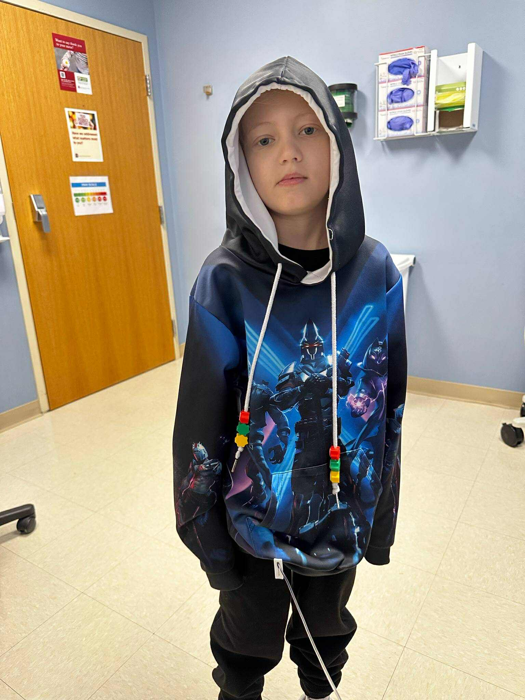
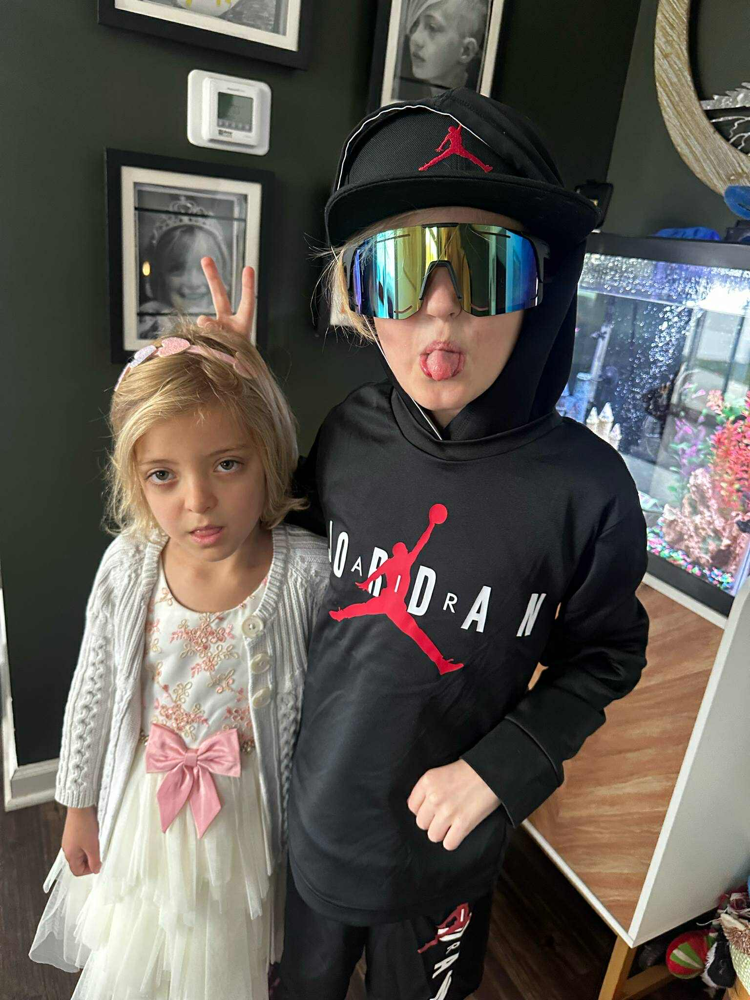
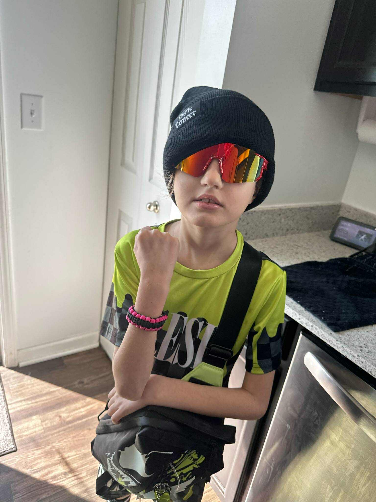
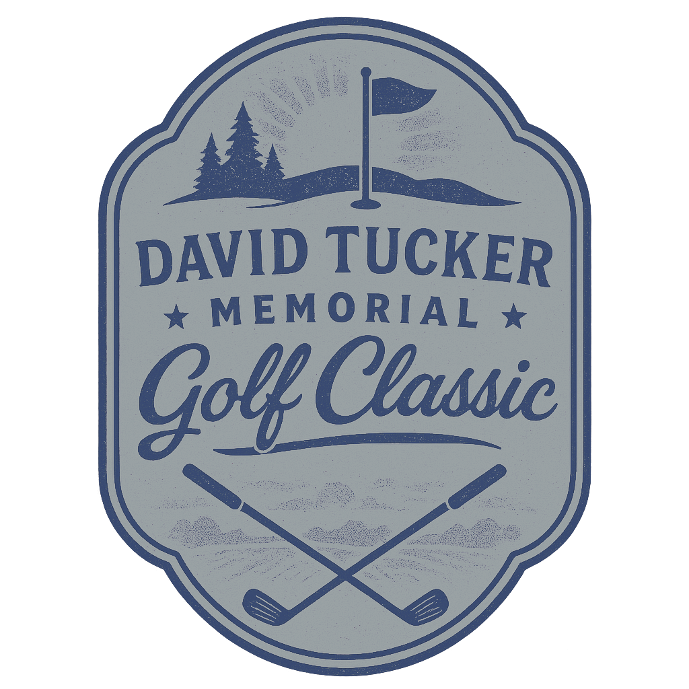

About This Year’s Athlete
Luke Turpin



Luke, 8 years old, was diagnosed with T cell acute lymphoblastic leukemia on October 24, 2024. He seemed healthy at first, but swollen lymph nodes prompted his pediatrician to order blood tests. The results came back fast and devastating. Luke had leukemia and was rushed to Riley Hospital for immediate treatment.
Further testing revealed a mass in his chest pressing against his airway and aorta. He was quickly moved to the Pediatric Intensive Care Unit (PICU) for specialized care. The situation was critical, and the medical team responded with urgency.
Luke’s treatment has been grueling. Chemotherapy caused him to lose 17% of his body weight, leaving him weak and struggling to recover. Things worsened when an undiagnosed infection led to endocarditis, forcing a six-week course of antibiotics delivered through his port. So far, he’s spent about two and a half months in the hospital which is an intense stretch that shows just how serious his condition has been.
Event Details

David Tucker Memorial Golf Classic
- Date:
- Saturday, July 19, 2025
- Check-in Time:
- 9:00 AM
- Shotgun Start Time:
- 10:00 AM
- Format:
- 4-Person Scramble
Includes green fees, cart, and a chance to win prizes. - Location
- Pittsboro Golf Course
2227 E. US 136, Pittsboro, IN 46167
Our Sponsors
Contests & Prizes
Winners of each contest will receive a $50 Gift Card to TopGolf.
Prizes will be awarded during the post-tournament awards ceremony.

Longest Drive

Closest to the Pin
Photo Gallery
Frequently Asked Questions
- What if it rains?
- We play rain or shine. In extreme weather we’ll reschedule.
- Can I get a refund?
- Yes, up to 30 days before the event.